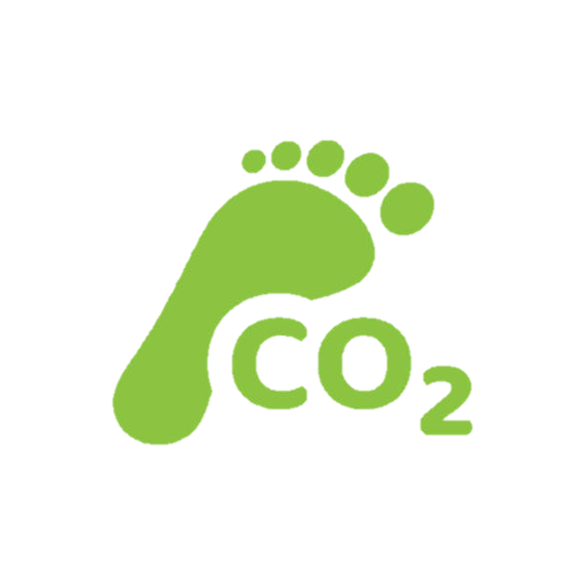

Global Environmental Impact of
Fast Fashion Production & Consumerism
What is Fast fashion?
rapid design, production, distribution, and marketing of clothing
... cheaper clothing
What does this mean?
consumers are quick to dump clothes when a new
trend surfaces
Can you believe that fast fashion is responsible for
10% of the global annual carbon footprint , which is
more than the emissions from all international flights and maritime
shipping combined?

Can you also believe that the amount of water used to manufacture
a pair of jeans (8,000 litres) is equivalent to
one person’s drinking water for roughly seven years
?
Before we dive into the environmental impact of fast fashion,
let's get to know some of the trends!
How do the fashion trends change overtime?
Fashion has evolved significantly, and
gender norms in clothing are no longer as rigid as they once
were.
The traditional idea that "pink is for girls" and "blue is for
boys" has been increasingly challenged.
Now, you see men wearing colors and patterns that were once
considered feminine—like polka dots, hearts, and yellow floral.
Fashion has become a space for self-expression, free from the constraints of gendered expectations.
What is the extent of the environmental implications of fast fashion
production?
What are the environmental impacts and detriments of fast fashion?